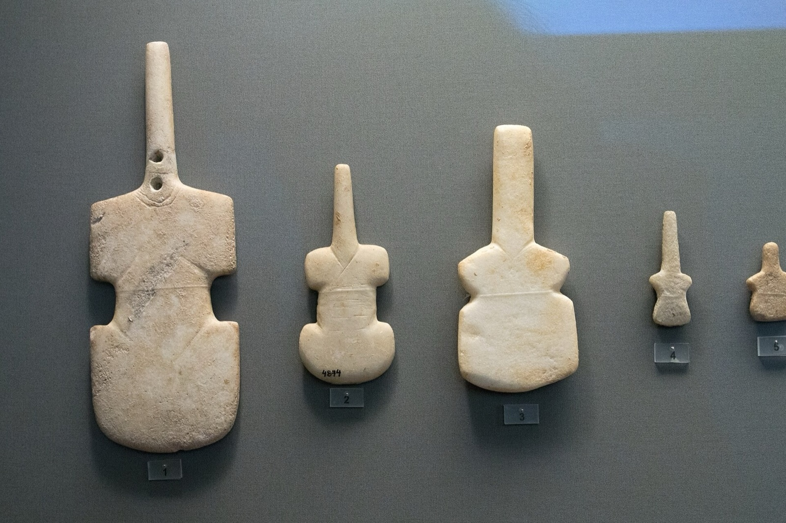
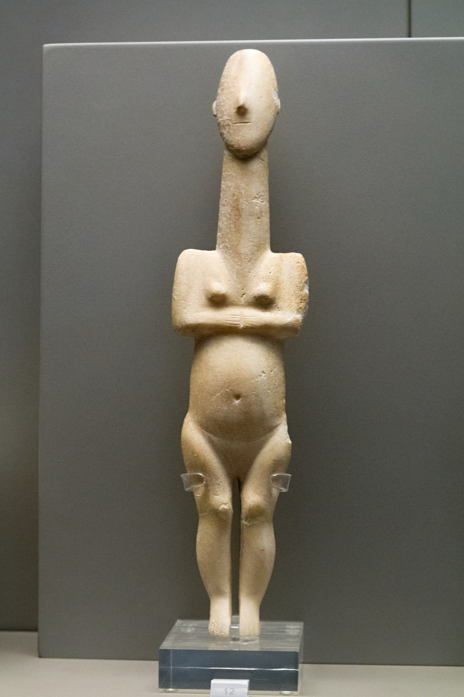

Arqueología
La colina de Akrotiraki
La casa se levanta sobre un cabo con una larga prehistoria. Esta página resume, para nuestros huéspedes, lo que los arqueólogos han publicado sobre él.
Un asentamiento y su necrópolis
Akrotiraki es un promontorio bajo, a unos 20 m sobre el mar, entre la bahía de Platys Gialos y, al sur, la pequeña cala de Lazarou. En la Edad del Bronce Antiguo, que en las Cícladas se llama periodo Cicládico Antiguo, había un asentamiento en su cima que se extendía por las laderas este y noreste. Sus muertos se enterraban en la ladera suroeste, sobre Lazarou.
La necrópolis se mencionó por primera vez en 1896, y Christos Tsountas publicó en 1899 su excavación de varias tumbas. Encontró la mayoría ya saqueadas. La cerámica del asentamiento muestra que estuvo habitado desde el Neolítico Final hasta el inicio de la última fase del Cicládico Antiguo, y que la mayor parte del material corresponde a la fase intermedia, el Cicládico Antiguo II. Colin Renfrew ha calificado Akrotiraki de yacimiento clave por esta larga ocupación, que él estima en unos 850 años.

La zona arqueológica declarada de Akrotiraki – Platys Gialos en el mapa oficial de los yacimientos de Sifnos. Pulse para ver toda la isla.
Mapa: Catastro Arqueológico, Ministerio de Cultura de Grecia
Plata a partir del plomo
Ya en 1841, un viajero, K. G. Fiedler, señaló litargirio, escoria pesada y abundante obsidiana en el acantilado al oeste de Platys Gialos. El litargirio es óxido de plomo; es el residuo que queda cuando la plata se separa del plomo por copelación.
Una excavación de urgencia de la 21.ª Eforía de Antigüedades, en la parte noreste del promontorio, cerca del mar, proporcionó el primer material excavado del asentamiento: al menos 46 piezas de litargirio en forma de cuenco poco profundo, más de 18,5 kg en total, la mayor de unos 18 cm de diámetro. Junto a ellas aparecieron un hogar semicircular, unos 130 fragmentos de cerámica recubiertos de óxido de plomo, escorias de plomo y de cobre, fragmentos de hornos y tres pequeños objetos de plomo.
«Akrotiraki puede considerarse el primer asentamiento conocido del Cicládico Antiguo en el que se producía plata mediante copelación».
Z. D. Papadopoulou, 2017
Lo importante es la fecha y el contexto: una copelación datada con seguridad en el Cicládico Antiguo, y dentro de un asentamiento.
Cobre en la loma
A unos 500 m, en la loma de Skali, a unos 130 m de altitud, una prospección localizó un lugar de fundición de cobre de la Edad del Bronce Antiguo, el primero de Sifnos fechado con certeza. Junto a sus hornos, una construcción semicircular de roca tallada y piedras servía probablemente para controlar el fuerte viento del norte. Otras prospecciones en un radio de 700 m de Akrotiraki identificaron tres lugares de fundición de cobre en Skali y uno de mineral argentífero en Kasela.
En el resto del Egeo meridional, estos lugares suelen estar apartados de los asentamientos; aquí no. Del asentamiento salieron además grandes cantidades de «cerámica de talco», una cerámica con un desgrasante blando y rico en talco, y es posible que fuera un centro de fabricación y exportación de esta cerámica por rutas marítimas ligadas al comercio de metales.

Figuras de mármol
Se conocen seis figurillas tempranas de mármol de la zona de la necrópolis y cinco fragmentos del asentamiento. Entre ellas hay un canto rodado del mar con muescas naturales que sugieren una cabeza y unas piernas; dos figuras «en forma de violín» de las tumbas de Tsountas, una de ellas reparada en la Antigüedad con dos pequeños orificios; la parte inferior de la pierna de una figura que debió de medir unos 27 cm, una de las mayores de su tipo, y un cuello decorado con puntos y rombos pintados en rojo. Otras cuatro figurillas, que vio un visitante en 1896, se han perdido.
No puede demostrarse que se tallaran en Sifnos, aunque la isla tiene mármol propio y algunos detalles apuntan a un taller local. Las figuras se conservan hoy en el Museo Arqueológico de Sifnos y en el Museo Arqueológico Nacional de Atenas.


Figurillas comparables del Cicládico Antiguo en el Museo Arqueológico Nacional de Atenas. Los hallazgos de Akrotiraki están publicados en Papadopoulou 2017.
Izquierda: Zde, CC BY-SA 4.0, vía Wikimedia Commons; derecha: Zde, CC BY-SA 4.0, vía Wikimedia Commons.


Lo que aún no se sabe
No se ha establecido de dónde procedía el mineral, aunque hay indicios claros de metal en las cercanías. Cierta cerámica antigua sugiere que la metalurgia comenzó incluso antes que los hallazgos datados con seguridad.
Pasear por la colina
Solo se han excavado pequeñas partes de la colina, y lo que hay debajo es frágil. Le rogamos que no se salga de los caminos, que no cave ni mueva piedras y que deje cualquier fragmento de cerámica, lasca de obsidiana o trozo de escoria donde lo encuentre. Si algo le llama la atención, díganoslo; nos gustará hablar de ello. Los hallazgos pueden verse en el Museo Arqueológico de Sifnos.
En otros lugares de Sifnos
La colina de Akrotiraki es uno de los muchos lugares de la isla donde el pasado está a flor de tierra.
La acrópolis de Agios Andreas
En lo alto de una colina del interior, con vistas a la bahía de Platys Gialos, se conservan las murallas de un asentamiento micénico fortificado de los siglos XIII a XII a. C.; la bahía era probablemente su puerto. El recinto amurallado tenía ocho torres rectangulares, y tres de sus lados siguen en pie en buen estado. El lugar se abandonó en el siglo XI a. C., volvió a ocuparse en el VIII y estuvo habitado hasta la época clásica. Se ha excavado y restaurado, y una pequeña exposición en el propio yacimiento, abierta desde 2010, muestra los hallazgos y explica la ciudad antigua, las minas y las torres.

Foto: Zde, CC BY-SA 4.0, vía Wikimedia Commons

Plata y oro
Heródoto escribió que a finales del siglo VI a. C. los sifnios eran «los más ricos de los isleños, gracias a las minas de oro y plata de la isla». En Agios Sostis, la minería podría remontarse a comienzos del tercer milenio a. C. Pausanias, que escribió mucho más tarde, cuenta que el mar inundó las minas.
Con la décima parte de esos ingresos, los sifnios construyeron un tesoro en Delfos hacia el 525 a. C.: un pequeño edificio jónico con dos doncellas esculpidas en lugar de columnas y un friso de dioses y gigantes, hoy en el Museo de Delfos.

Foto: George E. Koronaios, CC BY-SA 4.0, vía Wikimedia Commons
_on_October_4,_2020.jpg){kind=link}
Torres
En la isla se han registrado más de setenta torres antiguas, algunas cerca de las minas; su fecha y su función siguen discutiéndose. La obra de referencia es Siphnos: Ancient Towers B.C. (1991), de N. G. Ashton.
Kastro y el museo
Kastro, sobre su roca en la costa este, fue la capital de la isla desde la Antigüedad hasta 1836. Su Museo Arqueológico, abierto desde 1986, reúne escultura, cerámica y monedas de época griega y romana.
Para ver en un solo mapa todos los yacimientos arqueológicos declarados de la isla, consulte el Catastro Arqueológico del Ministerio de Cultura de Grecia.
Fuentes
- Papadopoulou, Z. D. 2011. “Akrotiraki and Skali: New Evidence for EBA Lead/Silver and Copper Production from Southern Siphnos.” In P. P. Betancourt and S. C. Ferrence (eds), Metallurgy: Understanding How, Learning Why. Studies in Honor of James D. Muhly (Prehistory Monographs 29), 149–156. Philadelphia: INSTAP Academic Press. WorldCat.
- Papadopoulou, Z. D. 2017. “Sculptures from Akrotiraki, Siphnos and its cemetery.” In M. Marthari, C. Renfrew and M. J. Boyd (eds), Early Cycladic Sculpture in Context, 107–118. Oxford: Oxbow Books. WorldCat.
- Marks, Y. A. 2024. A re-assessment of the evidence and context of the creation and development of Aegean Perforated Furnaces. PhD thesis, University of Sheffield, Department of Archaeology. White Rose eTheses Online.
Para «En otros lugares de Sifnos»
- Ashton, N. G. 1991. Siphnos: Ancient Towers B.C. Athens: Eptalophos. WorldCat.
- Herodotus, Histories 3.57, trans. A. D. Godley. Perseus Digital Library.
- Pausanias, Description of Greece 10.11, trans. W. H. S. Jones. Perseus Digital Library.
- “Acropolis of Agios Andreas” and “Exhibition in the Acropolis of Agios Andreas”, aegeanislands.gr.
- Hellenic Ministry of Culture, “Mycenaean Acropolis of Saint Andrew (Aghios Andreas), Sifnos”, All of Greece One Culture.
- Hellenic Heritage, “Acropolis of Agios Andreas”.
- “Archaeological sites”, roomsinsifnos.com.
- Wikipedia, “Siphnian Treasury”, “Kastro (Sifnos)” and “Sifnos”.
- Hellenic Ministry of Culture, Archaeological Cadastre.
Lecturas complementarias
- Gkion, K. I. 1876. Ιστορία της νήσου Σίφνου από των αρχαιοτάτων χρόνων μέχρι των καθ’ ημάς, μετά της περιγραφής των αρχαίων αυτής μεταλλείων χρυσού και αργύρου. Syros: Proodos. Academy of Athens Digital Library.
- Symeonidis, S. Ιστορία της Σίφνου. WorldCat.
- Filippakis. Τοπωνύμια της Σίφνου. WorldCat.
Esto es un resumen para nuestros huéspedes, no una investigación original. Para cualquier cuestión importante, consulte las publicaciones citadas o la Eforía de Antigüedades de las Cícladas.